The look overhaul on test/look-overhaul: 21–26 Nov 2026, 301 non-merge commits ahead of dev. Every frame below comes from an existing mockup render or the promo's live captures; dashed boxes are shots still to record. Narration is a TTS voice in first person, and it has opinions.
Title and thumbnail
Pick: “My Colony Sim Was Ugly. So I Repainted It in 5 Days” recommended
- AMy Colony Sim Was Ugly. So I Repainted It in 5 Days — self-deprecating confession plus a constraint. Same shape as “My Indie Game is Ugly…Let's Fix That” (75.8k) and “How I Made My Horror Game Look 10x Better” (49k on a small channel). “colony sim devlog” is an autocomplete hit with almost no competition.
- B301 Commits to Make My Pixel Game Look Alive — the number is real and odd enough to read as true; weaker hook, better for a second upload or a Short title.
- CI Painted Light Into a Pixel Art Game (Shaders, Not Sprites) — technique-first, the aarthificial lane (“Deferred Lights” 461k, “Next-Gen Pixel Art” 616k). Wins search on “pixel art lighting”, loses the casual browse.
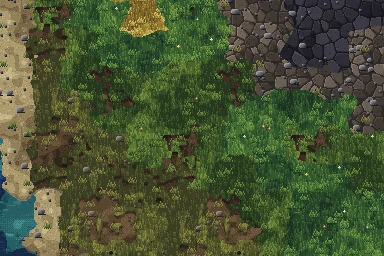
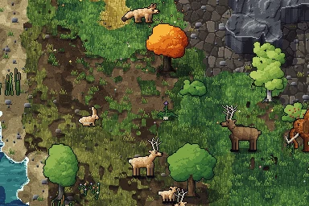
1 · Split seam pick
Same scene, hard vertical seam: flat carpet grass left, dressed grass with deer and trees right. Two words only. The before/after split is the most common winning devlog thumbnail; it reads at 168 px.
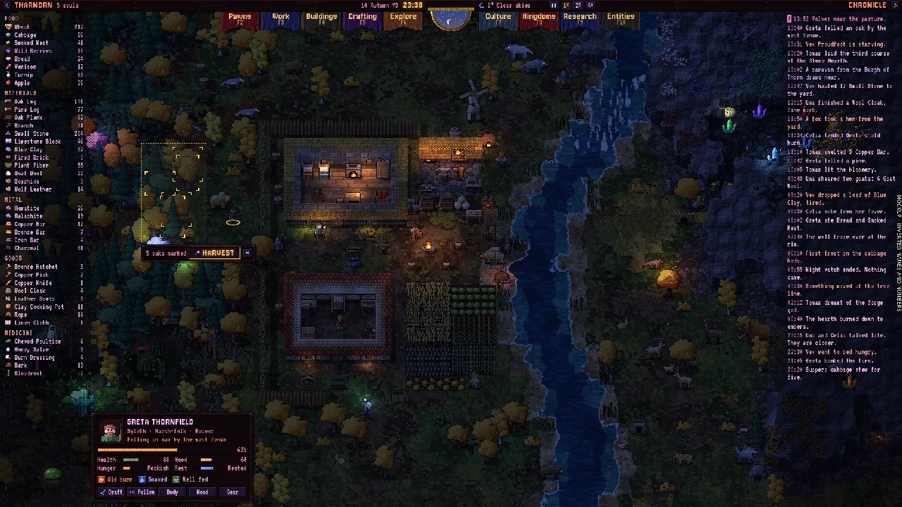
light
2 · Night glow
One moody night frame, blackletter title from the promo kit. Pairs with title C; prettier, but no contrast story, so it relies on the image alone.
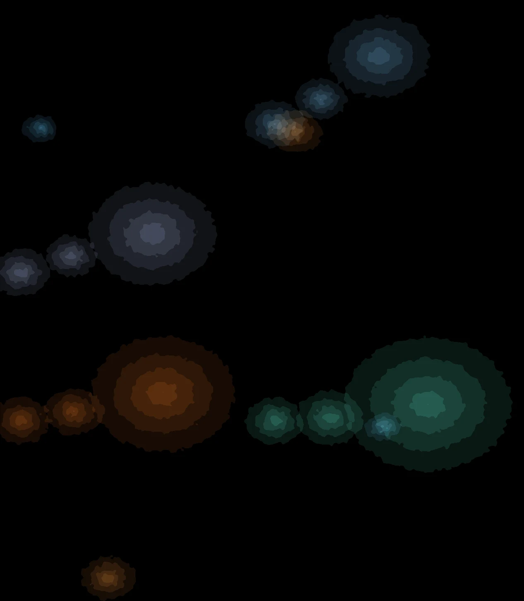
commits
3 · Hero tree
The emberwood elder alone, big number on the left. Works for title B and for the Shorts shelf; weakest at small size because the tree is the only subject.
How it sits in search
Long-form outline · ~11:40
Five acts. Every act ends on a reveal so the retention graph has a reason to stay flat.
9086b016, glyph mode on.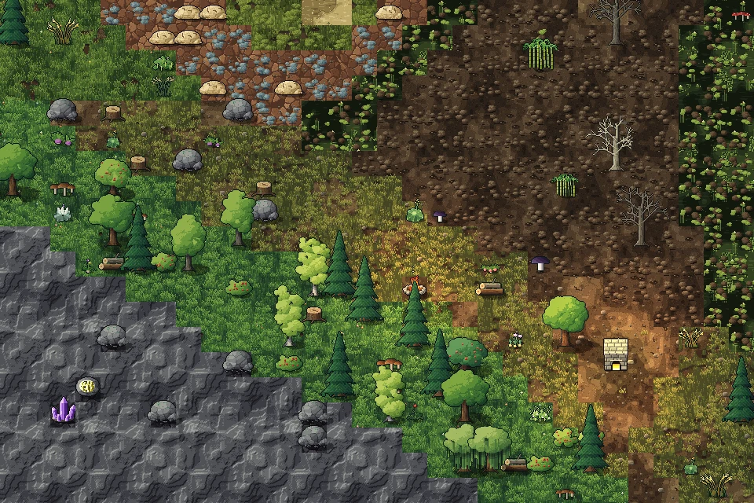
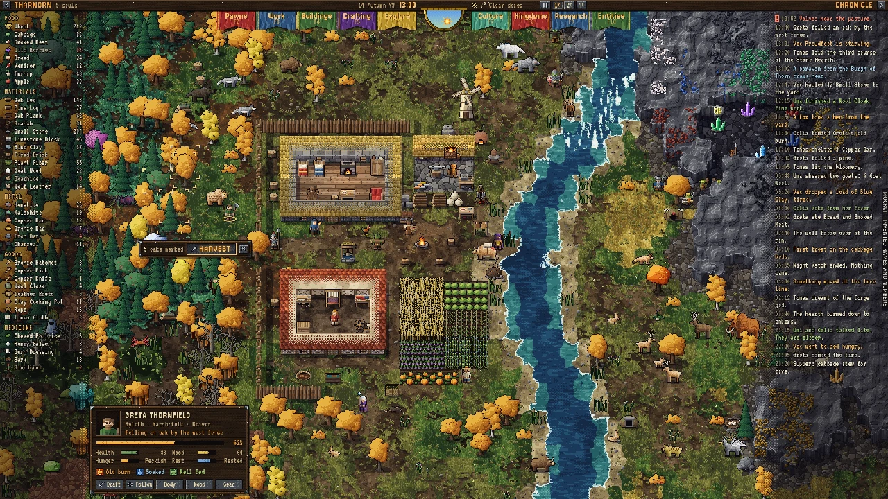
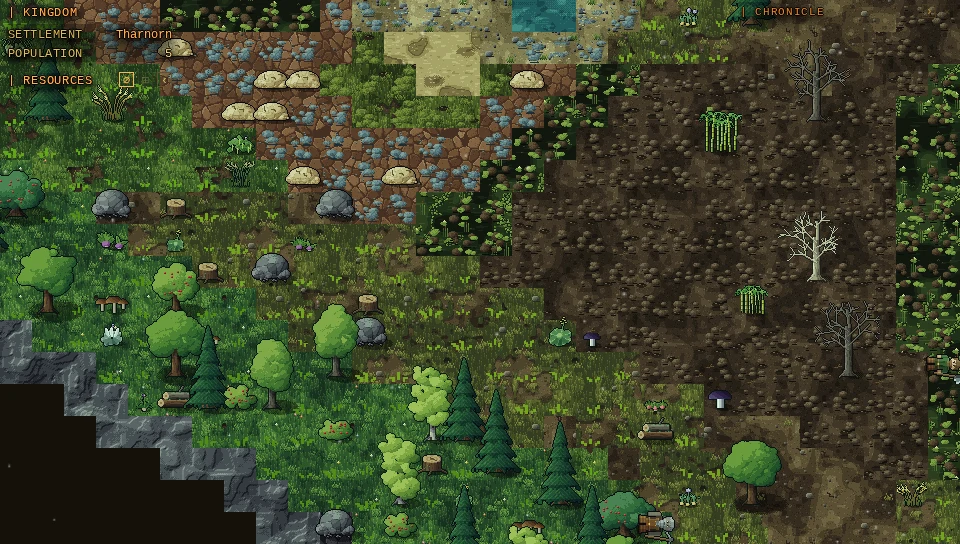
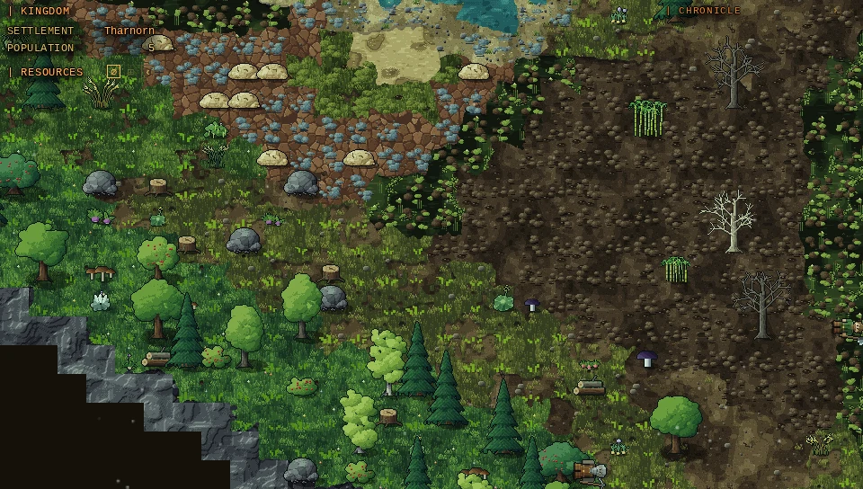
9086b016, default from 66dee6b0). Hold the cut on a dirt/grass edge; the difference is subtle at full frame, obvious zoomed.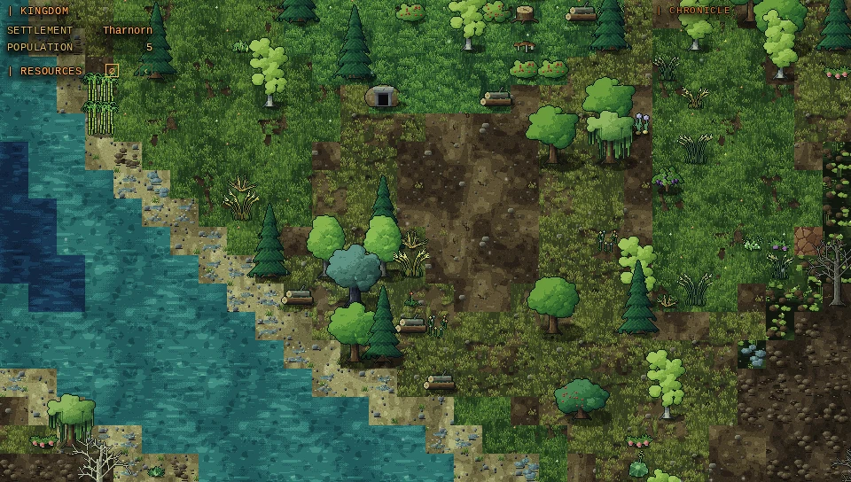
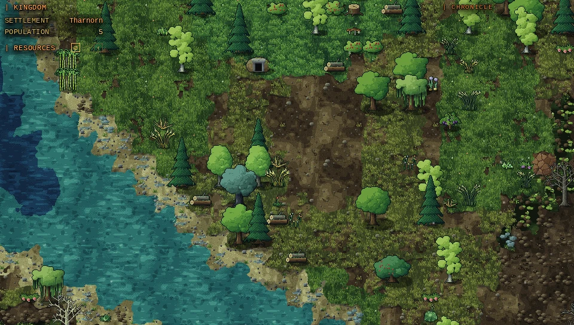
56ccd47c), one baked 2048 px field, wind gusts and ice. Rivers as lake water pushed downstream (7dbd9499).de30abee), came back as stepped tiers (556f9def). Opinionated beat: “the first version was clever and wrong.”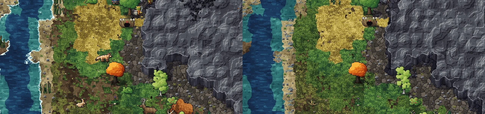
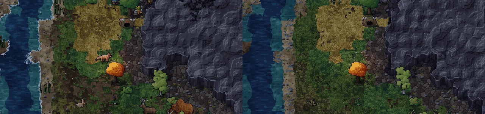
a022698e). Glow and drop shadows baked into a light atlas beside the colour atlas (1e3b23bb).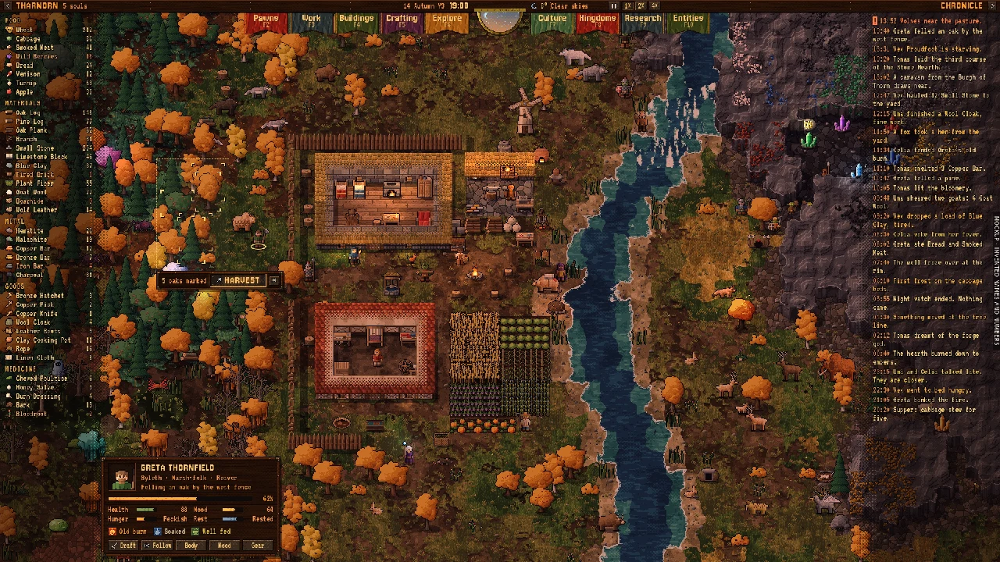
1947ea7f): say that out loud, it's the honest flex.
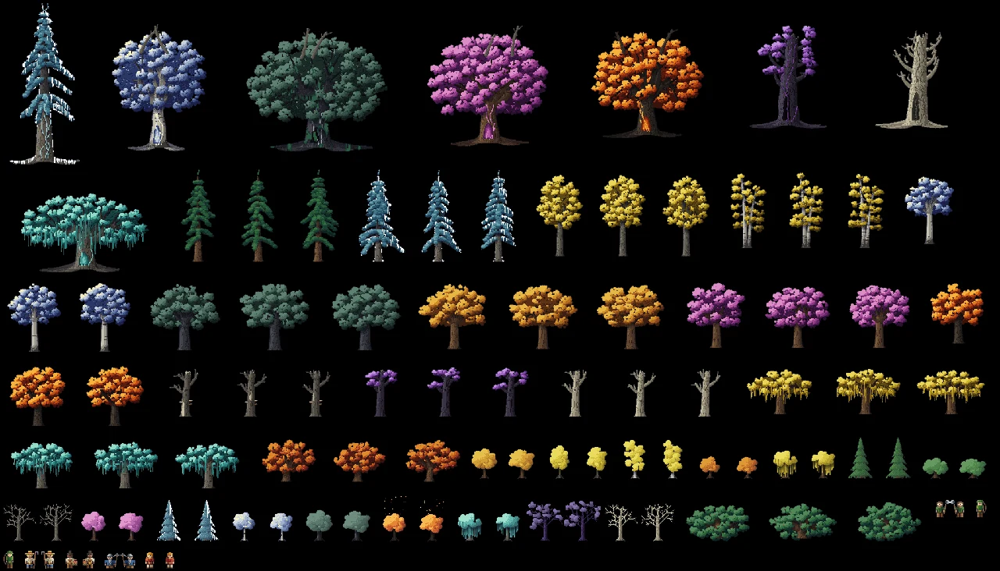
5cf1f385); then they flickered, fixed by leaning in whole art pixels (ec9bc28f). Show the flicker bug, it's the best 6 seconds of the act.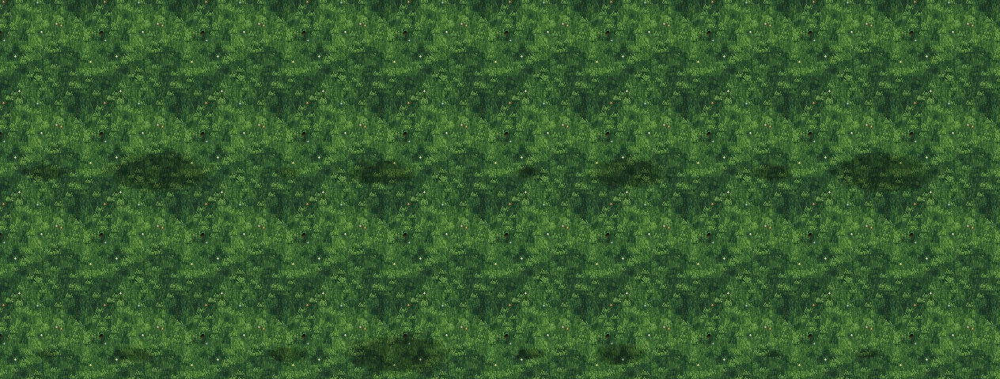
73930932); trunk, boughs and leaves split in the wind; the magical elder that sheds flame through its leaves (c8cacec8).53e344e7, d311fc48, dacae16a and the fix-frame-time-regression branch. Put real numbers on screen or cut the beat.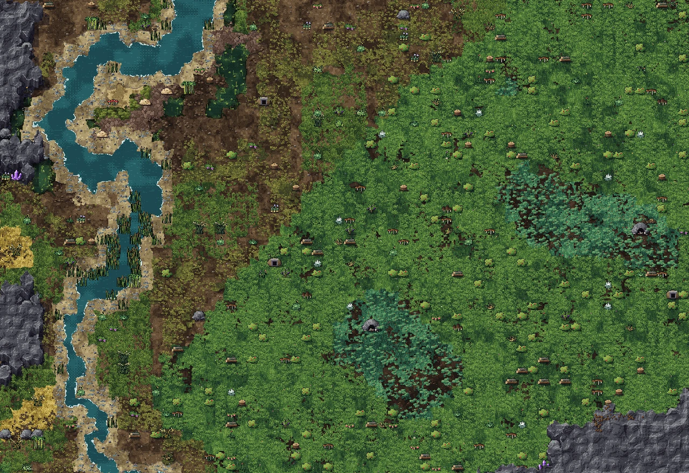
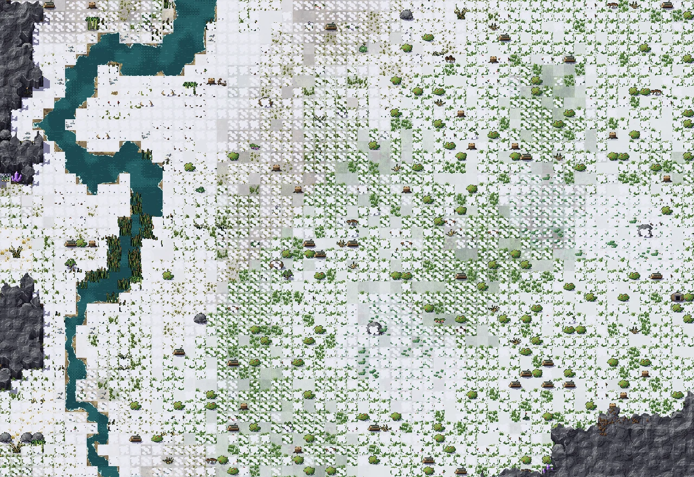
TTS script · hook to 2:00
TTS notes: one voice, slightly dry; pause 400 ms before each “before/after” cut; spell “301” as words.
Shorts · 9:16
5 days.
“Same map. 5 days.” · 25 s
- 0–2 s: the split, caption only, no voice.
- Wipe top to bottom across four pairs: grass, shore, light, trees.
- VO last 4 s: “Full breakdown on the channel.”
had a seizure
“My trees had a seizure” · 30 s
- Open on the flickering sway bug, full screen.
- VO: “Sub-pixel wind. Never again.” Fix: lean in whole art pixels.
- End on the calm forest in a gust. Loopable.
in 20 seconds
“Noon to midnight” · 20 s
- Pure timelapse of the day cycle, no VO, campfire sound.
- Caption counts the hours.
- Built to loop; ASMR-ish, for the pixel art crowd.
Evidence
YouTube autocomplete (public suggest endpoint, 26 Nov)
“colony sim devlog” is suggested but the top results have 70–550 views: an empty niche to rank in. Engine names dominate the rest; a WebGL game can't claim those, so the title leans on the confession, not the tech.
Comparable videos (YouTube search, 26 Nov)
| Video | Channel | Views | Takeaway |
|---|---|---|---|
| Every Pixel Art Game Has This Problem... | Barry's Dev Hell | 707k | Problem framing beats feature listing. |
| Next-Gen Pixel Art - Legacy Devlog #20 | aarthificial | 616k | Rendering technique is a proven draw. |
| Deferred Lights - Pixel Renderer Devlog #1 | aarthificial | 461k | Lighting alone carries a video. |
| Creating 3D Lighting for my 2D Game | JohnBrx | 90k | “my 2D game” + one technique, small channel. |
| My Indie Game is Ugly...Let's Fix That | Nerd Chomp | 76k | The “ugly” confession is title A's template. |
| How I Made My Horror Game Look 10x Better | AkulDev | 49k | Before/after title works for small channels. |
| DEVLOG - How I made my GAME LOOK BETTER in only 1 day | DevRatGames | 4.6k | A time limit alone isn't enough: the thumbnail has to show the change. |
Channel sizes weren't available without the API; the 4.6k vs 76k pair is the closest control: same idea, different framing. Sources: YouTube search results pages; suggestqueries.google.com (client=firefox, ds=yt); pixel-beef on light and depth.